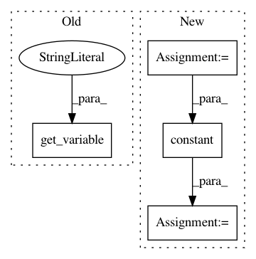

a4c4a4f2d33081806397784f96b113d5b3b32c9a,tensorforce/core/memories/prioritized_replay.py,PrioritizedReplay,tf_retrieve_timesteps,#PrioritizedReplay#Any#,149
Before Change
indices = tf.zeros(shape=(n,), dtype=tf.int32)
// Only compute once outside loop.
sum_priorities = tf.reduce_sum(input_tensor=self.priorities, axis=0)
loop_index = tf.get_variable(
name="loop-index",
dtype=tf.int32,
initializer=0,
trainable=False
)
def cond(sum_priorities, priorities, indices, loop_index, n):
return tf.less(loop_index, n)
After Change
return tf.no_op()
def tf_retrieve_timesteps(self, n):
num_buffer_elems = min(self.buffer_index, n)
buffer_indices = tf.range(
start=(self.buffer_index - 1 - num_buffer_elems),
limit=(self.buffer_index - 1)
)
num_priority_elements = n - num_buffer_elems
// Vectorized sampling.
sum_priorities = tf.reduce_sum(input_tensor=self.priorities, axis=0)
sample = tf.random_uniform(shape=(num_priority_elements,),dtype=tf.float32)
indices = tf.constant(value=0, shape=(num_priority_elements,))
def cond(loop_index, sample, priorities):
return tf.reduce_all(input_tensor=(sample <= 0))
def sampling_fn(loop_index, sample, priorities):
priority = self.priorities[loop_index]
sample -= priority / priorities
return (tf.add(loop_index, 1), sample, priorities)
priority_indices = tf.while_loop(
cond=cond,
body=sampling_fn,
loop_vars=(indices, sample, sum_priorities)
)[0]
priority_terminal = tf.gather(params=self.terminal_memory, indices=priority_indices)
priority_indices = tf.boolean_mask(tensor=indices, mask=tf.logical_not(x=priority_terminal))
In pattern: SUPERPATTERN
Frequency: 3
Non-data size: 4
Instances
Project Name: reinforceio/tensorforce
Commit Name: a4c4a4f2d33081806397784f96b113d5b3b32c9a
Time: 2018-02-08
Author: mi.schaarschmidt@gmail.com
File Name: tensorforce/core/memories/prioritized_replay.py
Class Name: PrioritizedReplay
Method Name: tf_retrieve_timesteps
Project Name: OpenNMT/OpenNMT-tf
Commit Name: d4808bcd7a6fc3a19d7a29d50c4e0702c47b7cc5
Time: 2017-08-08
Author: guillaume.klein@systrangroup.com
File Name: opennmt/embedders/text_embedder.py
Class Name: WordEmbedder
Method Name: _embed
Project Name: SPFlow/SPFlow
Commit Name: 50438cf6bdcd7a169c0aa46cbd54062a864081ab
Time: 2018-07-31
Author: molina@cs.tu-darmstadt.de
File Name: src/spn/structure/leaves/parametric/Tensorflow.py
Class Name:
Method Name: categorical_to_tf_graph